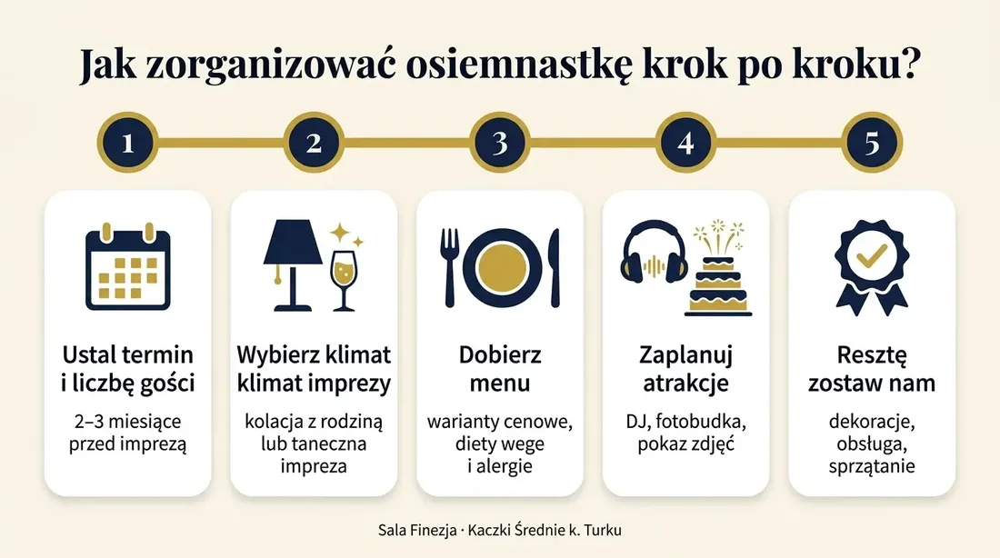

- Strona główna
- Przyjęcia
- Osiemnastka
Osiemnastka · do 150 gości
Osiemnastka w Turku i okolicach – jak zorganizować przyjęcie na 18. urodziny w Sali Finezja
Osiemnaste urodziny zdarzają się tylko raz. To dzień, w którym nastolatek oficjalnie wchodzi w dorosłość – i zasługuje na przyjęcie, o którym goście będą mówić jeszcze długo. Jeśli szukasz sali na osiemnastkę w Turku lub okolicach, Sala Finezja w Kaczkach Średnich (ok. 10 minut od Turku) to miejsce, w którym zajmiemy się wszystkim: od menu i dekoracji po muzykę i obsługę. Ty zajmiesz się tylko świętowaniem.
Dlaczego warto zorganizować 18. urodziny w Finezji?
Kameralnie i bez obcych gości
Salę wynajmujemy na wyłączność. W dniu imprezy nikt inny nie korzysta z obiektu, więc solenizant i jego goście mają całą przestrzeń tylko dla siebie – bez przypadkowych osób i bez ograniczeń w głośności zabawy.
Elegancki wystrój, który można dopasować do imprezy
Stylowe wnętrza Finezji stanowią świetne tło zarówno dla eleganckiego przyjęcia, jak i imprezy w klimacie klubowym, glamour czy tematycznym. Dekoracje, kolorystykę i oświetlenie dopasujemy do pomysłu jubilata.
Kompleksowa obsługa od A do Z
Nasz zespół ma doświadczenie w organizacji przyjęć okolicznościowych – wesel, jubileuszy, imprez firmowych i osiemnastek. Pomagamy zaplanować przebieg wieczoru, przygotowujemy menu, obsługujemy gości i dbamy o detale, dzięki czemu rodzice nie muszą martwić się logistyką.
Dogodna lokalizacja pod Turkiem
Kaczki Średnie leżą tuż obok Turku, z łatwym dojazdem z Konina, Koła, Dobrej i Władysławowa. Dysponujemy własnym parkingiem, a położenie z dala od zabudowań oznacza, że zabawa może trwać do późnych godzin.
Pełna personalizacja
Menu, tort, słodki stół, dekoracje, oprawa muzyczna, fotobudka, pokaz slajdów ze zdjęciami solenizanta – wszystko ustalamy indywidualnie. Jesteśmy otwarci na pomysły zarówno rodziców, jak i samego jubilata.

Sala na osiemnastkę – co oferujemy?
Sala bankietowa Finezja to przestronne, klimatyczne wnętrze, które pomieści do 150 gości. Układ sali pozwala na swobodne rozstawienie stołów, wydzielenie dużego parkietu tanecznego oraz miejsca na stół ze słodkościami lub strefę fotograficzną.
Do dyspozycji gości oddajemy:
- klimatyzowaną salę z profesjonalnym oświetleniem i nagłośnieniem,
- parkiet taneczny i miejsce dla DJ-a lub zespołu,
- bogate menu – ciepłe dania, zimne przekąski, słodki stół, napoje,
- tort urodzinowy i słodkości przygotowane według życzenia,
- pomoc w organizacji atrakcji: DJ, fotobudka, ciężki dym, fontanny iskier, animacje,
- własny parking i wygodny dojazd,
- pełną obsługę kelnerską przez cały czas trwania przyjęcia.

Jak zorganizować osiemnastkę krok po kroku?
- Ustal termin i liczbę gości – najlepiej 2–3 miesiące przed imprezą, weekendowe terminy szybko się zapełniają.
- Wybierz klimat imprezy – elegancka kolacja z rodziną, taneczna impreza ze znajomymi czy połączenie obu formuł? Pomagamy dopasować przebieg wieczoru.
- Dobierz menu – zaproponujemy zestawy w różnych wariantach cenowych; uwzględniamy diety wegetariańskie i alergie.
- Zaplanuj atrakcje – DJ, fotobudka, pokaz zdjęć, wjazd tortu z fontannami iskier. Polecimy sprawdzonych wykonawców.
- Resztę zostaw nam – dekoracje, ustawienie sali, obsługa i sprzątanie są po naszej stronie.

Najczęściej zadawane pytania (FAQ)
Ile kosztuje organizacja osiemnastki w Sali Finezja?
Cena zależy od liczby gości, wybranego menu i dodatkowych atrakcji. Przygotowujemy indywidualną wycenę – skontaktuj się z nami, a w ciągu 24 godzin otrzymasz ofertę.
Ile osób pomieści sala?
Komfortowo do 150 gości. Organizujemy również mniejsze, kameralne przyjęcia.
Czy można przynieść własny tort lub alkohol?
Tak – szczegóły ustalamy indywidualnie przy rezerwacji.
Czy pomagacie w organizacji DJ-a i atrakcji?
Tak, współpracujemy ze sprawdzonymi DJ-ami, fotografami i firmami oferującymi fotobudki czy efekty specjalne.
Do której godziny może trwać impreza?
Sala położona jest z dala od zabudowań mieszkalnych, więc zabawa może trwać do późnych godzin nocnych – godziny ustalamy przy rezerwacji.
Dekoracje na osiemnastkę – jak stworzyć klimat, który zapamiętają wszyscy goście
Dekoracje robią pierwsze wrażenie, zanim jeszcze ktokolwiek usiądzie do stołu. To one sprawiają, że sala z miejsca zamienia się w przestrzeń „tego jednego wieczoru” – dopasowaną do solenizanta, a nie do kolejnej imprezy. W Sali Finezja pod Turkiem mamy własne zaplecze dekoracyjne i zespół, który zaaranżuje wnętrze zgodnie z wybranym motywem – od klasycznej elegancji po odważne, tematyczne scenografie.
Co najczęściej wybierają jubilaci?
- Ścianki i tła do zdjęć – balonowe, kwiatowe lub z neonem „18” – najbardziej fotogeniczny punkt imprezy i gotowe tło pod Instagram.
- Podświetlane cyfry 18 i napisy LED – natychmiast ustawiają nastrój i świetnie wychodzą na zdjęciach po zmroku.
- Balony i girlandy – w kolorystyce imprezy: złoto i czerń, róż i biel, granat i srebro lub dowolne połączenie, które lubi solenizant.
- Dekoracje stołów – bieżniki, świece, kompozycje kwiatowe, numerki stołów w stylu imprezy.
- Słodki stół z aranżacją – tort, deserki i słodkości ustawione jako element scenografii, nie tylko poczęstunek.
- Światło i dym – kolorowe oświetlenie parkietu, ciężki dym do pierwszego tańca lub wjazdu tortu z fontannami iskier.
Osiemnastka tematyczna – sala dopasowana do pasji jubilata
Osiemnaste urodziny to idealny moment, by pokazać osobowość solenizanta. Wystrój Finezji jest neutralnym, eleganckim tłem, które łatwo „przebrać” pod konkretny pomysł. Kilka motywów, które sprawdzają się najlepiej:
| Motyw | Jak to wygląda w praktyce |
|---|---|
| Glamour / Black & Gold | Złote balony, cekinowe tła, świece, elegancka kolacja i taneczna druga część wieczoru |
| Hollywood / Czerwony dywan | Wejście po czerwonym dywanie, ścianka do zdjęć jak na premierze, „gwiazdy” z imionami gości |
| Podróże | Flagi krajów, które odwiedził jubilat, mapy, walizki jako elementy dekoracji, stoły nazwane miastami |
| Gaming / Filmowy | Plakaty ulubionych gier i filmów, neony, kolorystyka i muzyka w klimacie |
| Motoryzacja / Sport | Miniaturowe modele aut, szaliki i barwy klubowe, gadżety na stołach |
| Boho / Rustykalny | Suszone kwiaty, pampasy, drewno, lampiony i ciepłe światło |
Chcesz coś zupełnie własnego? Przynieś pomysł – zdjęcia z Pinteresta, ulubione kolory, listę zainteresowań – a my przełożymy to na aranżację sali.
Jak działamy?
- Rozmowa o pomyśle – ustalamy motyw, kolory i budżet na dekoracje.
- Propozycja aranżacji – pokazujemy, co możemy przygotować sami, a co warto zamówić u współpracujących dekoratorów, florystów i firm balonowych z Turku i okolic.
- Realizacja w dniu imprezy – sala jest gotowa przed przyjazdem gości, a po zabawie sprzątanie i demontaż są po naszej stronie.
Można też przynieść własne dekoracje lub zlecić wszystko nam – obie opcje są w porządku, a szczegóły ustalamy przy rezerwacji.

Muzyka na osiemnastkę – DJ, zespół czy playlista?
Muzyka decyduje o tym, czy goście siedzą przy stołach, czy tańczą do ostatniej piosenki. Na osiemnastce jest to szczególnie ważne, bo w jednej sali spotykają się dwa pokolenia – znajomi jubilata i rodzina. Dobry DJ potrafi połączyć oba światy: zagrać hity, które zna młodzież, a przy okazji poderwać do tańca ciocię i dziadka. Sala Finezja pod Turkiem ma pełne zaplecze techniczne i współpracuje ze sprawdzonymi DJ-ami, więc oprawę muzyczną możesz zamówić od razu razem z salą.
DJ czy zespół na 18. urodziny?
| DJ | Zespół muzyczny | |
|---|---|---|
| Repertuar | Praktycznie nieograniczony – od aktualnych hitów po klasyki dla starszych gości | Zależny od składu i stylu zespołu |
| Klimat | Klubowy, imprezowy – idealny na taneczną osiemnastkę | Bardziej „biesiadny”, koncertowy |
| Interakcja | DJ-konferansjer prowadzi wieczór, ogłasza tort, toasty, zabawy | Wokalista animuje gości, żywa energia |
| Koszt | Zwykle niższy | Zwykle wyższy |
| Najczęstszy wybór na osiemnastkę | – |
Zdecydowana większość jubilatów wybiera DJ-a – i to dobry kierunek. Jeśli jednak marzy Ci się występ zespołu, sala jest na to gotowa: mamy miejsce na scenę, nagłośnienie i zasilanie dla pełnego składu.
Co zapewnia Sala Finezja?
- profesjonalne nagłośnienie i oświetlenie parkietu (kolorowe światła, efekty LED),
- miejsce dla DJ-a lub sceny dla zespołu, z osobnym zasilaniem,
- możliwość zamówienia ciężkiego dymu na pierwszy taniec i fontann iskier do wjazdu tortu,
- ekran / rzutnik – pokaz zdjęć z dzieciństwa jubilata, teledyski, wideo-życzenia od bliskich,
- kontakt do współpracujących DJ-ów, którzy znają salę i wiedzą, jak ustawić sprzęt, żeby brzmiało dobrze w każdym miejscu.
Jak przygotować playlistę na osiemnastkę?
- Jubilat wybiera 20–30 utworów „must play” – to od nich zależy klimat imprezy.
- Rodzice dodają swoje 10–15 propozycji – żeby starsi goście również mieli swoje momenty na parkiecie.
- Lista „nie grać” – równie ważna jak lista hitów; DJ dostaje ją przed imprezą.
- Ustalcie scenariusz wieczoru – godzina wjazdu tortu, toast, pokaz zdjęć, ewentualne niespodzianki. DJ-konferansjer poprowadzi to płynnie.
- Resztę zostaw DJ-owi – doświadczony prowadzący czyta parkiet i sam wie, kiedy zagrać wolniejszy kawałek, a kiedy podkręcić tempo.
Dodatkowe atrakcje muzyczne
Jeśli chcesz, aby impreza wyróżniała się jeszcze bardziej, popularne dodatki to:
- karaoke – hit na drugą część wieczoru,
- saksofonista lub wokalistka do setu DJ-a – żywy instrument na tle muzyki klubowej,
- fotobudka z muzyką w tle – strefa dla tych, którzy potrzebują przerwy od parkietu,
- występ gościa specjalnego – youtubera, twórcy internetowego lub lokalnego artysty, którego lubi jubilat. Sala ma zaplecze techniczne pod każdy rodzaj występu, a my pomożemy w logistyce.

Menu na osiemnastkę – co podać, żeby goście byli zachwyceni?
O dobrej imprezie mówi się jeszcze długo po jej zakończeniu – a jedzenie jest jednym z pierwszych tematów. Na osiemnastce kuchnia musi sprostać dwóm grupom naraz: młodzieży, która najchętniej sięga po przekąski „na raz” między tańcami, oraz rodzinie, która oczekuje porządnego, ciepłego obiadu. W Sali Finezja pod Turkiem gotujemy na miejscu, we własnej kuchni, a menu układamy wspólnie z Tobą – bez sztywnych pakietów, za to z konkretnymi propozycjami dopasowanymi do budżetu i charakteru przyjęcia.
Co zwykle znajduje się w menu na 18. urodziny?
Ciepłe dania
Zupa na start (rosół, krem z pomidorów lub sezonowa propozycja), a następnie danie główne serwowane do stołu – do wyboru mięsa, ryby i opcje bezmięsne, do tego dodatki i surówki. Późnym wieczorem podajemy drugie i trzecie ciepłe danie, które ratuje głodnych po kilku godzinach na parkiecie.
Zimna płyta i przekąski
Deski mięs i serów, sałatki, tortille, wrapy, mini-burgery – to, co znika najszybciej i co młodzież lubi najbardziej. Zimne przekąski uzupełniamy na bieżąco przez cały wieczór.
Słodki stół i tort
Tort urodzinowy z efektownym wjazdem (opcjonalnie z fontannami iskier), a do tego stół ze słodkościami: mini-desery, muffiny, owoce, lody w pucharkach. Tort możesz zamówić u nas lub przynieść własny. Mamy także własny wypiek ciast domowych.
Napoje
Kawa, herbata, woda, soki i napoje gazowane bez limitu przez cały czas trwania imprezy. Na życzenie przygotujemy bar z kolorowymi napojami bezalkoholowymi – hit wśród młodszych gości – a kwestię alkoholu dla dorosłych ustalamy indywidualnie przy rezerwacji.
Diety i alergie – bez stresu
Coraz więcej gości nie je mięsa lub ma alergie pokarmowe. Dlatego w każdym menu przygotowujemy:
- pełnowartościowe dania wegetariańskie i wegańskie (nie tylko „warzywa z grilla”),
- opcje bezglutenowe i bez laktozy na zgłoszenie.
Wystarczy, że podasz nam liczbę gości z konkretnymi wymaganiami – resztą zajmie się kuchnia.
Formy podania – wybierz styl przyjęcia
| Forma | Dla kogo | Jak to działa |
|---|---|---|
| Serwowana kolacja | Elegancka osiemnastka z rodziną | Dania podawane do stołu przez kelnerów, klasyczny przebieg przyjęcia |
| Bufet | Impreza taneczna ze znajomymi | Goście jedzą, kiedy chcą, więcej swobody i ruchu |
| Mix | Najczęstszy wybór | Ciepły obiad do stołu, kolejne posiłki i słodki stół na całą noc |
Dlaczego u nas smakuje?
Finezja to przede wszystkim sala weselna – a wesela to najbardziej wymagający sprawdzian dla kuchni. Ten sam zespół gotuje na osiemnastki. Nasi kucharze łączą pasję z regularnymi szkoleniami kulinarnymi, dzięki czemu obok klasyki, którą lubią starsi goście, potrafimy przygotować dania w nowoczesnym stylu, które trafią w gust młodzieży. Doświadczona obsługa kelnerska dba o to, żeby półmiski były pełne, a goście nigdy nie musieli szukać kelnera.
Jak ustalamy menu?
- Podajesz liczbę gości i budżet – proponujemy 2–3 warianty menu w różnych cenach.
- Wybieracie wspólnie z jubilatem – on wie, co lubią jego znajomi, Ty wiesz, czego oczekuje rodzina.
- Zgłaszasz diety i alergie – na 7 dni przed imprezą.
- Degustacja – przy większych przyjęciach możesz spróbować wybranych dań przed uroczystością.

Zobacz też
Kaczki Średnie 10c · 4 km od Turku
Zarezerwuj termin osiemnastki
Planujesz 18. urodziny w Turku lub okolicach? Zadzwoń lub napisz – opowiemy o możliwościach, pokażemy salę i przygotujemy ofertę dopasowaną do Twoich potrzeb.
665 188 619- Drugi telefon
- 601 637 397
- Adres
- Kaczki Średnie 10c, 62-700 Turek
Do Turku kilka minut, z Konina ok. 30 min, z Kalisza ok. 50 min - Godziny otwarcia
- Pon. 10:00–13:00 · Czw. 9:00–13:00
Pt.–niedz. 9:00–21:00